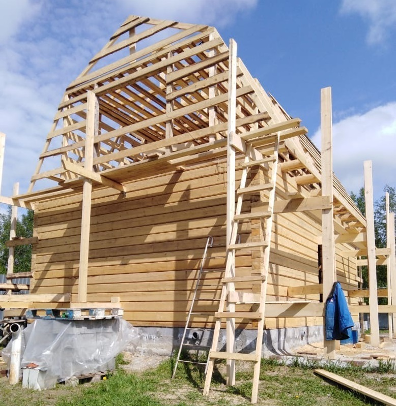

В данной статье мы раскроем основные вопросы выбора которые возникают у застройщика в начале малого деревянного домостроения, и те вопросы , которые мы можем решить в ходе осуществления вашего заказа.
Мы изготовляем и доставляем изделия из обычного бревна и массивного профилированного бруса. Доставка производится на участок на территории ХМАО и ЯНАО, а также Тюменской области. Изготовление возможно как по нижеуказанным стандартным размерам, так и по индивидуальным размерам, а также по проектам взятым из Интернета. Наше производство штучное, ориентированное на качество, а не на объем, а потому не требующее собственной проектной базы.
Из многолетней работы на рынке малого деревянного домостроения - основной объем заказов ограничивается стандартными размерами. Изготовление индивидуальных проектов конечно же осуществляется, но надо понимать, что такие «навороты» как капитальные перегородки рубленные фронтоны, рубленные террасы требуют дополнительного расхода материалов, усложненной работы в изготовлении. Все это несет за собой удорожание проекта.
В рубку и изготовление домокомплектов используются бревна только зимней заготовки, заготовленные в таежных лесах севера Омской области. Основные породы – сосна, ель.
Бани

Минимальный размер бани для заказа из обычного бревна - это 3х3м по внешним длинам. Это самый бюджетный вариант, и этого размера вам хватит попариться и помыться, но не более. Верхние бревна по желанию могут быть вынесены на 2м для создания маленькой террасы под общей крышей.
3х4м – самый продаваемый размер из обычного бревна. Все, как и в первом случае, но места немного побольше. Также можно заказать вынос на 2м по длине стороны – 3м.
5х3м. Вариант, при котором уже можно перегородкой отделить моечное и парное отделение от маленькой комнаты отдыха. Этот размер также является минимальным для изготовления его из массивного профилированного бруса 160х200мм. Начиная с него и для всех других размеров можно заказать рубленную из профилированного бруса, либо каркасную террасу под общей крышей. Также 5х3м возможно изготовить из осинового профилированного бруса. Но при этом два нижних венца делаются из хвойных пород дерева.
Стандартная высота для вышеуказанных бань не менее 2,2 м. С увеличением размеров бань высота пропорционально увеличивается.
5х4м размер для заказа, может быть кому-то более подходящий, чем другие.
6х3м вариант, при котором вы получаете небольшие, но полноценные, моечную и парную, а также комнату отдыха. Дополнительно можно заказать перегородку из профилированного бруса, либо наборную из бруса 100х100мм. В перегородке необходимо указать расположение дверного проема, слева или справа. Удобнее в эксплуатации , если он будет на стороне входа в баню. Также надо обозначить дверной проем в баню. Это повышает качество изготовления и облегчает сборку.
6х4м. Самый ходовой размер для бани из профилированного бруса. Начиная с такого размера можно изготовить каркасный (из бруса 100х100мм) второй этаж под закладку утеплителя, с «ломанной» крышей. При этом конструктивно изготавливается терраса 3х6м с вынесенными на нее потолочными балками бани . Второй этаж размером 6х3м делается смещенным на 1,5м на террасу с утеплением также и пола. При такой конструкции мы на минимальном размере получаем полноценную баню с комнатой для проживания.
Со стандартными размерами бань наверно все. Последующие размеры 5х5м, 5х6м, 6х6м и далее могут быть как банями (в зависимости от бюджета строительства и потребностей) так и садовыми домиками. Разница между ними в высоте и внутренней планировке домокомплектов. Для бани не требуется высота дома, там вы долго не находитесь, это лишний объем для отопления и увеличение теплопотерь. Возможны варианты, когда баня является частью садового домика отгороженная капитальной перегородкой. При этом изготавливаются разноуровневые потолки в бане и комнате отдыха. Возводится несимметричная крыша.
Дома
Изготовление домов из массивного профилированного бруса возможно любых размеров и сложности. Размер бруса 160х200мм (профиль лунный паз) подобран опытным путем как оптимальный для изготовления теплых, качественных объектов деревянного домостроения. Эстетично смотрится в стенах как бань так и домов. Такая высота бруса в строении дает меньшее количество венцов, что способствует сохранению тепла. Сочетание механической станочной обработки на шведском станке, и последующая ручная рубка углов в «чистый угол», при которой даже уже с точными геометрическими размерами профилированному брусу подбирается его место, дает то качество , на которое за 9 лет работы еще не было нареканий. Дополнительно брус засверливается на шканты (нагели), что способствует его правильной сборке и усадкестен впоследствии. Наши дома стоят на Ямале, севере Томской области, ХМАО и имеют только положительные пользовательские отзывы.
Наиболее часто заказываемый стандартный размер для садовых домиков это 6х6м. Иногда используется как начало последующего строительства полноразмерного бюджетного дома путем пристройки Для него можно заказать комплект материалов мансардного каркасного этажа 6х4м., под закладку утеплителя. Изготавливается он в таком случае под «ломанную» четырехскатную крышу. Также в этом случае необходима капитальная перегородка.
Затем идут как чаще используемые размеры 6х7м и 6х8м. Все это определяет бюджет строительства и потребности.
Если говорить о минимальном размере полноценного жилого дома, то наше мнение это размер 8,4х8,4м. Исходим из того, что ширина комнаты не может быть менее 3м. В таком доме легко планируются и зонируются комнаты с длинами 3 и 5 метров, чем и достигается эргономичность данного размера .
Также если вы в возрасте , при планировании строительства помните, что вторым этажом вы будете пользоваться редко, а цена на строительство повысится.
Общие условия поставки домокомплектов бань домов из профилированного бруса, а также обычного бревна.
Стандартная комплектация поставки сруба из обычного бревна : стены, балки половые и потолочный плюс стропила. По желанию заказчика возможная докомплектация обрезной доской пола и потолка, обрешеткой и обрезной доской фронтонов. Все в достаточном количестве для поставляемого размера. Также можно заказать вынесенные потолочные балки для обустройства террасы, а также ее пола.
Стандартная комплектация домокомплектов из профилированного бруса: стены, балки половые и потолочные, обрезная доска пола 40мм, обрезная доска потолка 25мм, пристенный брусок, обрешетка – необрезная доска 25мм, стропила брус 100х100мм, фронтоны обрезная доска 25мм, 1 сорт. Все в достаточном количестве для поставляемого размера. Дополнительно можно заказать материалы на террасу как изготовленную из профилированного бруса так и каркасную из бруса. Рубленный фронтон из профилированного бруса.
В связи с нашей работой в несколько регионов цена на поставляемое изделие зависит от географического расположения города заказчики и не может быть общей для всех. При формировании нескольких заказов в одном направлении цена на доставку снижается. На сайте даны базовые цены для г. Нефтеюганска
Всегда необходима предоплата, как правило, 20% при стандартных размерах заказа. Предоплата нужна как наличие доброй воли заказчика на окончание сделки. Планы, бывает такое , у кого-то меняются, и нам, добросовестным поставщикам не хочется за это платить. Полная оплата по факту доставки.
При желании заказчика заключается договор поставки с указанием необходимых реквизитов и всех условий сделки. Договор может быть составлен как в письменном, так и в электронном виде.
Для осуществления заказа пишите на сайте, звоните по указанным номерам.